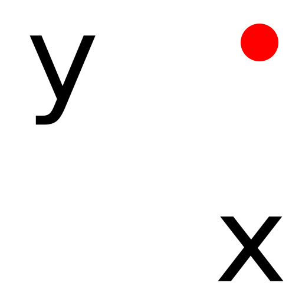

Coordinate
Toolbar / Icon:

Menu: Snap - Coordinate
Shortcut: S, X
Commands: snapcoordinate | sx
Description:
Defines a point by entering an absolute or relative Cartesian
coordinate.
Procedure:
- Start this tool when you have to specify a point and want to do so by
entering a coordinate.
- Enter the coordinate in the options tool bar and choose if it is an
absolute coordinate or a relative one (relative to the relative zero
point).
- Click the OK button or press Enter to confirm the input and set the
coordinate: